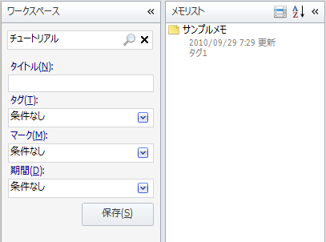

スマートフォルダを使う
検索条件をスマートフォルダに保存することができます。 一度スマートフォルダを作れば，以後はスマートフォルダを選択するだけでその検索条件で簡単にノートを検索できます。
検索条件を保存してスマートフォルダを作る
スマートフォルダを作るには，まずワークスペースペインでノートの検索条件を入力します。
ワークスペースペイン上部の「検索」テキストボックスの「検索」アイコンをクリックして 検索用の画面(クエリビルダと呼びます)を表示します。 「検索」テキストボックスには，ノートのタイトルや本文に含まれる文字列を入力しますが， 他の条件のみで検索したい場合は空のままでもかまいません。 ここでは「チュートリアル」という文字列を入れておきます。

クエリビルダでは他にもタイトルやタグなどを検索の条件に指定することができます。 ここではタグに「タグ1」を指定しておきます。
この検索条件を保存してスマートフォルダにするにはクエリビルダ下部の「スマートフォルダに保存」ボタンを押します。 指定した条件が入力された状態で「スマートフォルダの設定」ダイアログが表示されます。
スマートフォルダ名を適宜変更して「OK」ボタンを押すとスマートフォルダが作成されます。
以降，ワークスペースペインでこのスマートフォルダを選択すると，
- ノートのタイトルや本文に「チュートリアル」という文字を含む
- かつ，「タグ1」が付けられている
の条件を満たすノートが検索されてノートリストペインに表示されます。